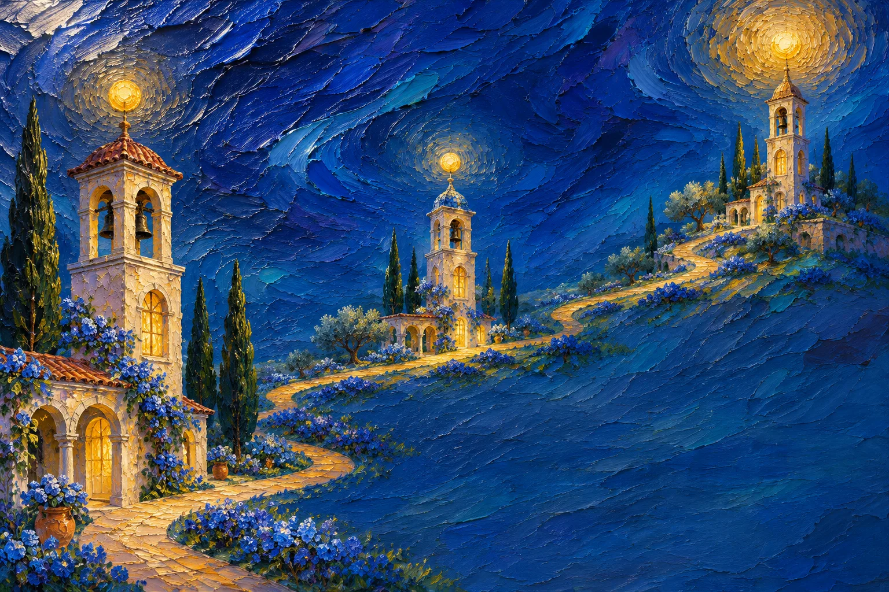

La noche
también
se pinta.
Encuentro privado de arte
12 DIC 2026 · 19:00
Entrar al lienzo ↓Tres formas
de sentir la noche.
Tocá una obra y mirala de cerca.
Seguí
las luces.

Exposición
Brindis
Una copa. Nuevas miradas.
Nos encontramos en
Galería
Umbral.
Pasaje del Lienzo 184
Buenos Aires
Vos también
sos parte.
Hasta el 8 de diciembre.